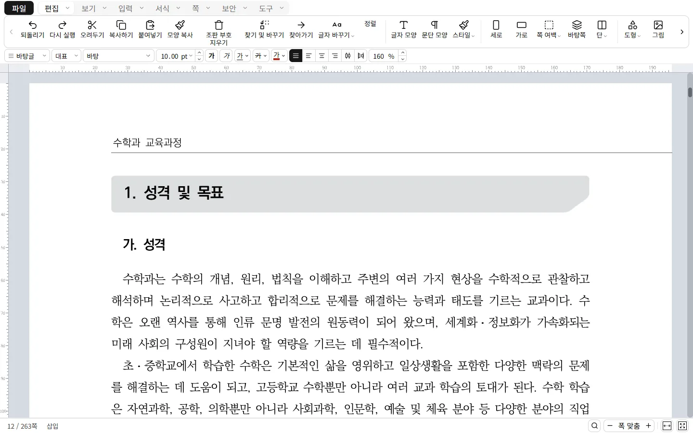

한글 없이, 브라우저에서
HWP·HWPX 문서를 열고 고치세요
ClassingHWP 는 .hwp, .hwpx 한글 문서를 웹 브라우저에서 바로 열어 보고, 고치고, HWP·HWPX·PDF 로 저장하는 무료 편집기입니다. 프로그램을 설치하지 않아도 되고, 문서는 서버로 올라가지 않습니다.
아직 개발 중입니다. 문서에 따라 한글과 다르게 보이는 곳이 있을 수 있습니다.

주요 기능
C++ 로 쓴 문서 엔진이 WebAssembly 로 브라우저 안에서 돌아갑니다. 문서를 읽고, 한글처럼 쪽을 나누어 조판하고, Skia 로 그립니다. 메뉴와 단축키는 한글을 따랐습니다.
HWP·HWPX 열기와 저장
한글 5.x 의 .hwp 와 개방형 .hwpx 를 모두 열고, 두 형식으로 다시 저장합니다. PDF 로 저장하거나 인쇄할 수도 있습니다.
한글과 같은 조판
줄 나눔, 쪽 나눔, 단, 구역, 머리말·꼬리말, 쪽 번호, 바탕쪽, 각주·미주를 한글과 맞추어 그립니다.
글자·문단 서식
글자 모양, 문단 모양, 스타일, 탭, 모양 복사, 찾기·바꾸기, 되돌리기를 씁니다.
표
표 넣기, 줄·칸 넣기와 지우기, 셀 합치기·나누기, 셀 테두리와 배경, 셀 크기 같게, 표·셀 속성을 고칩니다.
그림·도형·수식
그림, 선·사각형·타원·호·다각형·곡선 도형, 한글 수식, 캡션, 개체 속성을 다룹니다.
메모·책갈피·하이퍼링크
메모, 교정 부호, 책갈피와 찾아가기, 하이퍼링크를 읽고 고칩니다.

웹페이지에 한글 문서 넣기
보기 전용 화면은 고치는 메뉴 없이 문서만 보여 줍니다. 주소의 ?file= 에 문서 주소를 주면 그 문서를 바로 열고, iframe 으로 학교·기관 홈페이지 안에 한글 공문이나 안내문을 그대로 보여 줄 수 있습니다.
<iframe src="https://ede.kr/hwp/viewer?file=https://example.com/공문.hwpx&zoom=width"
width="100%" height="800" style="border: 0"></iframe>배율(zoom), 쪽(page), 쪽 모양(view)을 주소로 정하고, postMessage 로 페이지에서 다룰 수 있습니다. 자세한 내용은 ClassingHWP/web 안내에 있습니다. 다른 서버의 문서는 https 주소여야 하고, 그 서버가 Access-Control-Allow-Origin 헤더를 보내야 합니다.
AI 에이전트로 한글 문서 다루기
같은 문서 엔진을 명령줄 도구 chwp-agent 와 에이전트 스킬로도 냅니다. 스킬을 깔면 AI 가 HWP·HWPX 문서를 열어 글을 읽고, 찾고, 고치고, 쪽을 PNG 로 그려 확인한 뒤 HWP·HWPX·PDF 로 저장합니다.
- Claude (claude.ai): 스킬 묶음 ZIP 을 올려서 씁니다.
- ChatGPT: Work 모드에서 스킬로 씁니다.
- Claude Code 등 내 컴퓨터의 에이전트: 스킬을
~/.claude/skills/chwp-agent/에 풀고, 엔진은 pip 으로 깝니다. - MCP:
chwp-agent --mcp가 같은 기능을 MCP 서버(stdio)로 냅니다.
내려받기와 소스
core 릴리스
WebAssembly 엔진 ZIP, AI 에이전트 스킬 ZIP, 엔진 wheel 이 있습니다.
web 릴리스
다른 웹 앱에 넣어 쓰는 보기 패키지(tgz)가 있습니다.
ClassingHWP/core
문서 엔진: HWP·HWPX 읽기·쓰기, 조판, 그리기(C++, WebAssembly).
ClassingHWP/web
웹 앱: 편집기와 보기 전용 화면(React + Vite).
자주 묻는 질문
한글(한컴오피스)이 없어도 HWP 파일을 열 수 있나요?
네. 편집기를 브라우저에서 열고 [파일] 메뉴의 열기로 .hwp 나 .hwpx 파일을 고르면 됩니다. 프로그램을 설치하지 않아도 됩니다.
내 문서가 서버로 올라가나요?
아니요. 문서를 읽고 그리고 저장하는 엔진이 WebAssembly 로 브라우저 안에서 돕니다. 서버에서 받는 것은 앱과 글꼴뿐입니다.
무료인가요?
네, 무료로 쓸 수 있습니다. 소스는 Apache-2.0 에 Commons Clause 를 더한 조건으로 공개되어 있어, 고쳐 쓰고 다시 나눌 수는 있지만 ClassingHWP 자체를 파는 것은 막혀 있습니다.
HWP 를 PDF 로 바꿀 수 있나요?
네. 편집기의 [파일] 메뉴에서 「PDF로 저장」을 고르면 됩니다. AI 에이전트 스킬과 명령줄 도구로도 PDF 로 저장할 수 있습니다.
글꼴이 한글과 다르게 보여요.
라이선스 때문에 내줄 수 없는 글꼴(한컴 전용 글꼴, 윈도우 글꼴 등)은 읽기용 대체 글꼴로 보여 주고, 문서를 고치기 시작하면 그 대체 글꼴의 원본 OFL 글꼴로 바뀝니다. 그래서 글자 모양이 한글과 조금 다르게 보일 수 있습니다.
AI 로 한글 문서를 고칠 수 있나요?
네. chwp-agent 스킬을 Claude 나 ChatGPT 에 올리거나 Claude Code 같은 에이전트에 깔면, AI 가 HWP·HWPX 문서를 읽고 고쳐 저장합니다.